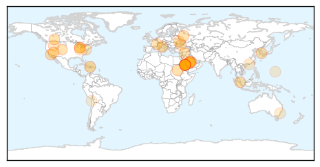

30 Day Trends
Web: 0 alerts, 0 warnings
Twitter: 1 alerts, 0 warnings
Top Articles:
- 0.996
- Sharp Rise In MERS Cases May Mean The Virus Is Evolving : Shots
- 0.995
- Sharp Rise In MERS Cases May Mean The Virus Is Evolving
- 0.994
- Saudi Arabia sacks health minister as MERS toll rises
- 0.993
- Saudi health minister sacked as MERS toll rises
- 0.990
- Saudi health minister sacked as MERS toll rises
- 0.990
- Health Ministry: Egypt safe from Corona outbreaks
- 0.987
- Health Ministry’s MERS warning
- 0.977
- S. Arabia replaces health minister amid MERS virus fears
- 0.966
- MERS scare: Saudi replaces health minister
- 0.963
- Saudi Arabia replaces health minister amid MERS virus fears
- 0.961
- Saudi Arabia replaces health minister amid MERS fears
- 0.936
- Deadly MERS Disease Strikes Malaysia, Could Go Global
- 0.925
- KBS World Radio
- 0.917
- Youngstown News, Ohio hog farms hit by baby-pig-killing virus
- 0.917
- Chicago Tribune
- 0.917
- Chicago Tribune
- 0.917
- Chicago Tribune
- 0.917
- Chicago Tribune
- 0.917
- Chicago Tribune
- 0.917
- Chicago Tribune
- 0.917
- Chicago Tribune
- 0.917
- Chicago Tribune
- 0.889
- Ohio hog farms are hit by disease that kills baby pigs - Alliance Review
- 0.866
- U.S. Secretary of State Kerry urges Russia to help implement Ukraine agreement
- 0.866
- Syria to hold presidential election on June 3
- 0.866
- Putin changes law to ease citizenship for Russian speakers
- 0.866
- Russia bars some Ukrainian banks from Crimea
- 0.822
- St. Mary’s Hospital declares end to outbreak of gastro illness
- 0.821
- 1 MERS case reported
- 0.799
- New Mers cases in Saudi jump to 49
- 0.750
- UT Health Researchers Investigate New MRSA Superbug Found In Brazil BioNews Texas
- 0.727
- Health : New oral vaccine against rotavirus
- 0.713
- Porcine Epidemic
- 0.632
- Top 10 killer diseases in Hong Kong claim 18pc more lives than a decade ago
- 0.614
- Children With Irritable Bowel Syndrome 4 Times More Likely To Develop Celiac Disease
- 0.599
- Boyne City Commission to discuss fluoride in the water; Gazette investigation reveals county H20 ranges from no fluoride to too much
- 0.587
- Saudi health minister sacked as MERS toll rises
- 0.539
- 60 positive for TB at DOC
- 0.515
- Thousands Of Hospital Kidney Deaths 'Avoidable'
- 0.513
- Chile: some services restored after quake
- 0.503
- News, Weather, Sports, Breaking News
Top Tweets:
- 0.580
- Saudi MoH announces a death of a previously reported MERS case (M 54). Total deaths in SA reach 81 out of 261 cases. Fatality Rate~ 31%.
Web/News Articles

Tweets

Article Locations
Article Confidences